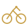
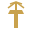

Private Club
Grupo de Caçadores de Moinhos e Parques na Holanda
O pelotão
Pedalamos flat em Enschede e arredores — sem subidas, com moinhos históricos, parques espetaculares e muita conversa no caminho. Conectamos o Strava para rankings mensais e relatórios do grupo.
As regras de ouro

Moinhos e parques na rota — desafios épicos, zero subidas.
Parar pra comer e parar pra beber — faz parte do ritual.
Toda pedalada termina no Paulinho
Ponto final obrigatório: sorvete no Gelato Van der Poel — carinhosamente o Paulinho.
Último relatório — {{ latest_summary.month_label_pt }}
{{ "%.0f"|format(latest_summary.distance_month_km) }}
km no mês
{{ "%.0f"|format(latest_summary.distance_year_km) }}
km em {{ latest_summary.year }}
{{ "%.1f"|format((latest_summary.earth_percent_since_group|default(latest_summary.earth_percent_year|default(0))) * 100) }}%
volta ao mundo
Quer entrar no pelotão?
Conecte o Strava e entre nos rankings do grupo.